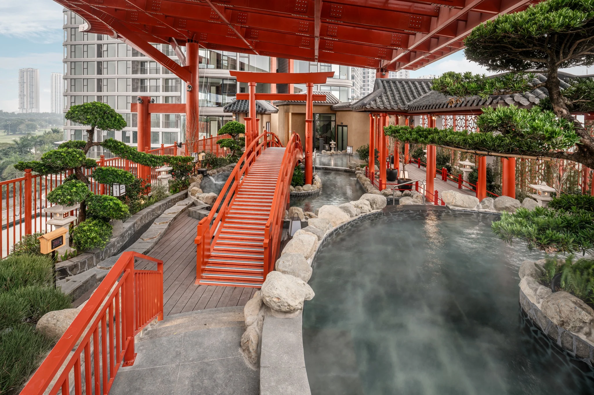

10 / 10
ECOPARK HƯNG YÊN
ONSEN
Bộ ảnh Onsen tại Ecopark Hưng Yên giới thiệu không gian tắm trong nhà và ngoài trời, mặt nước, đá tự nhiên và kiến trúc mang cảm hứng Nhật Bản giữa cảnh quan xanh của khu đô thị.
- Địa điểm
- Hưng Yên, Việt Nam
- Loại hình
- Onsen